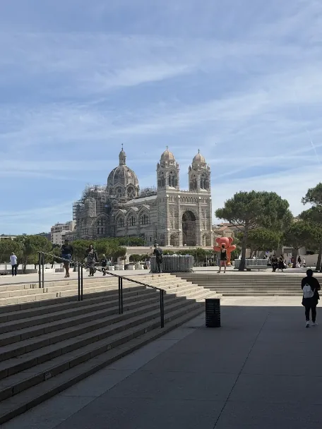

Une expérience construite dans plusieurs dimensions du métier
Plus de vingt ans d’immobilier ont conduit Bruno Lebert du terrain à des responsabilités de développement et de direction. Son parcours lui a permis de travailler au contact des biens et des clients, mais aussi des équipes, de leur intégration, de leur formation, de leur management et de l’organisation d’activités immobilières.
Cette trajectoire lui donne aujourd’hui une lecture transversale du métier : un problème apparent n’est pas toujours sa cause réelle, et une décision immobilière gagne souvent à être replacée dans son contexte avant d’être tranchée.
Ce que ce parcours permet aujourd’hui
La connaissance du terrain reste le point de départ. À Marseille, la valeur et l’intérêt d’un bien dépendent de son adresse, de son immeuble, de ses caractéristiques, de son environnement et du moment du projet. Les données sont utiles ; elles prennent tout leur sens lorsqu’elles sont confrontées à la réalité du bien et du marché.
Pour une organisation immobilière, la même exigence de contexte s’applique. Recrutement, équipe, organisation, performance et développement interagissent. L’expérience de Bruno lui permet d’aborder ces sujets ensemble lorsque la situation le demande, sans réduire automatiquement une difficulté à son symptôme le plus visible.
Une lecture immobilière qui reste ancrée dans le réel
Installé professionnellement à Marseille depuis 2006, Bruno connaît une ville où quelques rues peuvent modifier fortement la perception d’un bien. Relief, lumière, environnement, immeuble, copropriété, état et concurrence locale comptent autant que les moyennes lorsqu’il faut comprendre une situation concrète.
Cette attention au réel complète les données disponibles. Elle permet de remettre un prix, une estimation ou un projet dans son contexte, sans opposer l’analyse du marché à l’observation du bien.

Quand une décision mérite plus qu’un chiffre
Une estimation automatique, une moyenne au mètre carré ou une transaction récente peuvent donner des repères utiles. Elles ne suffisent pas toujours pour décider de vendre, d’acheter, d’attendre ou de revoir une hypothèse.
Bruno peut apporter une lecture complémentaire lorsqu’un bien, son environnement ou la situation du projet demandent à être interprétés. Pour commencer, le dossier estimation immobilière à Marseille permet de comprendre les principaux repères de valeur.
Prendre du recul sans perdre le contact avec l’opérationnel
L’expérience de Bruno couvre suffisamment de dimensions du métier pour comprendre que les sujets d’équipe, de recrutement, d’organisation, de performance ou de développement ne vivent pas toujours séparément.
Il peut apporter du recul, confronter une lecture et proposer des orientations. Lorsque la situation et les responsabilités confiées le demandent, il peut également prendre en charge un périmètre opérationnel, travailler avec les équipes et contribuer à l’exécution. Le dirigeant conserve le cap, sa responsabilité et les arbitrages qui lui appartiennent.
Pour les enjeux de structure et de développement, voir la page conseil, audit et développement d’agence immobilière à Marseille.
Quelques repères suffisent
La légitimité de Bruno repose d’abord sur la durée et la diversité de son expérience : plus de vingt ans dans l’immobilier, une pratique du terrain, des responsabilités de développement et de direction, et un travail continu avec des particuliers, des professionnels et des équipes.
Ses profils publics permettent à ceux qui le souhaitent de retrouver des recommandations et avis dans leur contexte, sans transformer cette page en dossier de preuves.
Un sujet immobilier mérite parfois une lecture extérieure
Qu’il s’agisse d’un bien, d’une décision ou d’une situation professionnelle plus complexe, l’échange peut commencer simplement : comprendre le contexte et voir si l’expérience de Bruno peut être utile.